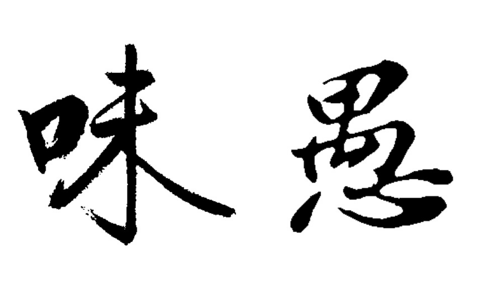

 读尽床头几卷书，占得人间一味愚
散文
我也曾几度在花下徘徊：那时学生都上课去了，只剩我一人。暖和的晴日，鲜艳的花色，嗡嗡的蜜蜂，酝酿着一庭的春意。我自己如浮在茫茫的春之海里，不知怎么是好！——朱自清《背影》
北方的雪的特点之一是孤独,在这里他还被表现成死掉的雨的意思.北方的雪完成升华是与死亡联系在一起的,也正是完全的献身,让他成为了雨的精魂——鲁迅《雪》
福禄寿是中国民族生活上的理想。画上的排列是禄居中央，右是福，寿居左。禄也者，拆穿了说就是吃的东西。老子也曾说过："虚其心实其腹"，"圣人为腹不为目"。——夏尊《谈吃》
吾充吾爱汝之心,助天下人爱其所爱,所以敢先汝而死,不顾汝也。汝体吾此心,于啼泣之余,亦以天下人为念,当亦乐牺牲吾身与 汝身之福利,为天下人谋永福也。汝其勿悲!——林觉民: 《与妻书》
时间好慢，共你看水天一色觉得流云离别也变缓。可是又好快，轻轻一拨时针就转过十年。——消失宾妮《葬我以风》
有一种寂寞，身边添一个可谈的人，一条知心的狗，或许就可以消减。有一种寂寞，茫茫天地之间余舟一芥的无边无际无着落，人只能各自孤独面对，素颜修行。——龙应台《目送》
中年人的沧桑中，总有一种无言的伤痛。目送生命的逝去，目送生命的远行，却只能目送，无法挽留。——龙应台《目送》
我们读书，总是从一本书的最高境界来欣赏和品评。我们使用绳子，总是从最薄弱的一段来断定绳子的质量。——杨绛《我们仨》
不是无情，亦非薄幸，只是我们一生中会遇上很多人，真正能停留驻足的又有几个?生命是终将荒芜的渡口，连我们自己都是过客。——安意如《人生若只如初见》
谁说猫无情呢?猫有时候的离家出走是因为好奇，好奇外面的世界，但是她是会回家的。可惜，现代社会太多的捉猫人，毫无独自生存经验的家猫才不能回家。——朱天心《猎人们》
| 爱情 | 唯美 |
| 励志 | 伤感 |
| 青春 | 梦想 |
| 哲理 | 成长 |